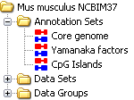

Every SeqMonk genome comes with a set of annotation which covers the most common types of features you're likely to want to view against the genome (genes, mRNA, CDS etc). However you may want to import extra sets of annotation to use in your analysis.
Currently SeqMonk supports the import of extra annotation from the following file formats:
Other formats will be added as and when people request them.
Once you import an extra annotation set it will appear in the AnnotationSets folder of your DataView and any annotation it provides will immediately become available in the annotation track selector. If your set of annotations contains more than 1 million features they will be split up into subsets so you might see more than one set for each file you import, but the results will be merged together in the annotation tracks you see.

Although annotation sets are stored separately the annotation tracks in the chromosome view are split only by the annotation type and if several annotation sets provide features of the same type then they will all be merged together in the track shown in the chromosome view.
You can right-click on any annotation set in the data view to either change its name, see a breakdown of the features it contains, or delete it from your project. All extra annotation information is saved in your project and will be re-imported the next time the project is opened.